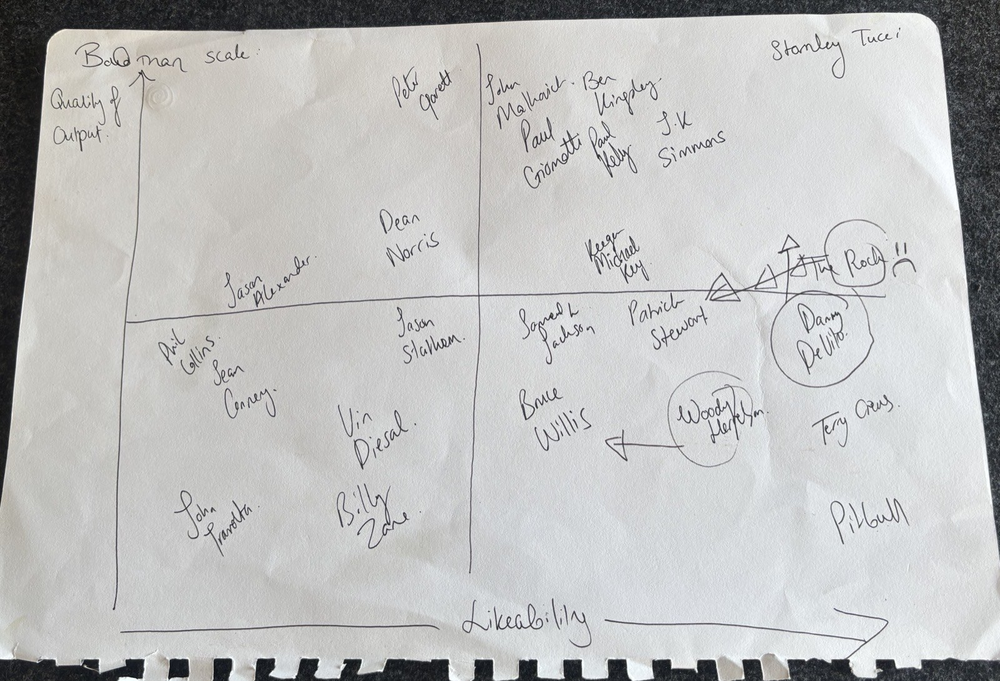

Household Research · Original Investigation
The Bald Man Scale
A Two-Axis Taxonomy of Bald Celebrities (n = 24)
1 The Household. Received 2026; accepted 2026, over dinner.
Abstract
We present the first known attempt to place 24 bald male celebrities on a two-axis plane measuring likeability against quality of output. Assessment was performed by a two-member panel in a single sitting. Results confirm Stanley Tucci as the ceiling of the discipline and the bottom-left corner as the permanent residence of John Travolta. Three placements remain formally contested (†). The original instrument is reproduced in Fig. 2. Findings are final and not subject to appeal.
Method
Subjects (n = 24) were assessed by a two-member panel in a single evening sitting, on two continuous axes: likeability and quality of output. Baldness was the sole inclusion criterion, applied with moderate rigour. No calibration was performed, and none is planned.
Inter-rater disagreements were resolved by circling the disputed subject and drawing an arrow at it (Fig. 2). Three placements remain formally contested. The panel notes that Woody Harrelson’s position is sub judice.
Findings
| Subject | Likeability | Quality of output | Panel note |
|---|---|---|---|
| Quadrant I — High output, high likeability (the exemplars) | |||
| Stanley Tucci | 8.3 | 9.8 | Control specimen. Makes a negroni on the internet; the discipline applauds. |
| Ben Kingsley | 5.9 | 9.1 | Gandhi buys a great deal of altitude. Insisting on “Sir Ben” spends some of it back. |
| John Malkovich | 5.1 | 9.1 | So singular they made a film about occupying his head. The panel remains slightly afraid of him. |
| J.K. Simmons | 6.5 | 8.5 | Whiplash justifies the altitude. The insurance advertisements keep him approachable. |
| Paul Giamatti | 5.2 | 8.4 | Elite output, delivered by a man permanently four seconds from a full meltdown. |
| Paul Kelly | 5.7 | 8.2 | Wrote “How to Make Gravy”. The instrument has no axis for that, so this will have to do. |
| Keegan-Michael Key | 5.8 | 6.3 | Suspiciously well-adjusted. The panel found nothing to complain about, and has docked him for it. |
| The Rock † | 8.6 | 6.2 | Maximum charisma engineering. The filmography is one film released forty times. |
| Patrick Stewart | 6.4 | 5.2 | A knight of the realm, mid-table. Make it so-so. |
| Samuel L. Jackson | 5.0 | 5.0 | Appears in everything, and therefore averages to the exact centre of everything. |
| Quadrant II — High output, low likeability (respected from a distance) | |||
| Peter Garrett | 3.4 | 9.2 | The output of Midnight Oil, docked a full axis for a decade in federal cabinet. |
| Dean Norris | 3.4 | 6.7 | They’re minerals, Marie. A strong body of work; likeability suppressed by association with the DEA. |
| Jason Alexander | 1.8 | 5.8 | Spent nine seasons perfecting an unlikeable man; the panel can no longer separate the two. |
| Quadrant III — Low output, low likeability (the difficult cases) | |||
| Jason Statham | 3.4 | 4.7 | Every film is the same film. The panel respects the consistency and declines to call it range. |
| Phil Collins | 0.7 | 4.6 | “In the Air Tonight” holds the quality line. Four decades of inescapable radio play hold the other one. |
| Sean Connery | 1.3 | 4.3 | The definitive Bond. The interviews have aged like the opposite of whisky. |
| Bruce Willis | 4.9 | 3.5 | Two decades of Die Hard credit, spent one direct-to-video film at a time. |
| Vin Diesel | 2.9 | 3.3 | Has spoken of little but family across eleven films. The panel is not family. |
| John Travolta | 1.2 | 1.6 | Gotti, Wild Hogs, and the public invention of “Adele Dazeem”. The corner is earned. |
| Billy Zane | 2.8 | 1.5 | Titanic villain. Under examination conditions, the panel could not name a second credit. |
| Quadrant IV — Low output, high likeability (beloved regardless) | |||
| Danny DeVito † | 8.3 | 4.9 | Trash-man energy approaching Tucci-grade likeability at a fraction of the altitude. |
| Woody Harrelson † | 6.9 | 3.5 | Placement under active household dispute; a downward revision has been tabled. |
| Terry Crews | 8.7 | 3.6 | Flexed individual pectorals on national television and was beloved for it. The quality axis remains unmoved. |
| Pitbull | 8.8 | 1.8 | Mr. Worldwide. Output quality is irrelevant to a man this pleased to be here. Dale. |
Samuel L. Jackson sits at the exact origin of both axes and has been assigned to Quadrant I as a courtesy.

Appendix A — Image Credits
Portraits in Fig. 1 are weighted-Voronoi stipple derivatives of the following photographs — freely licensed except where noted — and are shared under the same licenses as their sources.
- Jason Alexander: derived from “Jason Alexander” by antisocialtory, CC BY 2.0.
- Phil Collins: derived from “Phil Collins, 2025 for ‘Eras’ (cropped)” by Will Ireland, courtesy of Concord, CC BY-SA 4.0.
- Sean Connery: derived from “Sean Connery 1999 (cropped)” by Georges Biard, CC BY-SA 3.0.
- Terry Crews: derived from “Terry Crews by Gage Skidmore 5” by Gage Skidmore, CC BY-SA 3.0.
- Danny DeVito: derived from “Danny DeVito cropped and edited for brightness” by Gage Skidmore, CC BY-SA 3.0.
- Vin Diesel: derived from “Vin Diesel 2013 SDCC (cropped)” by Gage Skidmore, CC BY-SA 2.0.
- Peter Garrett: derived from “Peter Garrett 2017” by Xmetov, CC BY-SA 4.0.
- Paul Giamatti: derived from “Paul Giamatti MFF 2024” by Montclair Film, CC BY 2.0.
- Woody Harrelson: derived from “Woody Harrelson 191020-N-NU281-1028 (cropped)” by MCS2 Justin R. Pacheco, U.S. Navy, public domain.
- Samuel L. Jackson: derived from “SamuelLJackson” by Philip Romano, CC BY-SA 4.0.
- Paul Kelly: derived from “Paul Kelly 2007” by Andrew Braithwaite, CC BY 2.0.
- Keegan-Michael Key: derived from “Keegan-Michael Key by Gage Skidmore 2” by Gage Skidmore, CC BY-SA 3.0.
- Ben Kingsley: derived from “Ben Kingsley by Gage Skidmore” by Gage Skidmore, CC BY-SA 3.0.
- John Malkovich: derived from “John Malkovich, Berlinale 2023 (cropped)” by Elena Ternovaja, CC BY-SA 3.0.
- Dean Norris: derived from “Dean Norris by Gage Skidmore 4” by Gage Skidmore, CC BY-SA 3.0.
- Pitbull: derived from “Pitbull 2009-12-15” by Photobra Adam Bielawski, CC BY-SA 3.0.
- The Rock: derived from “Dwayne Johnson-1764” by Harald Krichel, CC BY-SA 4.0.
- J.K. Simmons: derived from “JK Simmons at the 2024 Toronto International Film Festival (cropped)” by Jay Dixit, CC BY-SA 4.0.
- Jason Statham: derived from “Jason Statham 2018” by MTV International, CC BY 3.0.
- Patrick Stewart: derived from “Patrick Stewart by Gage Skidmore 2” by Gage Skidmore, CC BY-SA 3.0.
- John Travolta: derived from “Travolta 05 (48686383962) (cropped)” by GabboT, CC BY-SA 2.0.
- Stanley Tucci: derived from “ConclaveBFILFF101024 (9 of 44) (cropped)” by Raph_PH, CC BY 2.0.
- Bruce Willis: derived from “Bruce Willis by Gage Skidmore 3” by Gage Skidmore, CC BY-SA 3.0.
- Billy Zane: derived from a photograph in the household archive; provenance undocumented. The panel considered the likeness too strong to withhold.
{kind=link}
.jpg){kind=link}
.jpg){kind=link}
{kind=link}
{kind=link}
.jpg){kind=link}
{kind=link}
{kind=link}
.jpg){kind=link}
{kind=link}
{kind=link}
{kind=link}
{kind=link}
.jpg){kind=link}
{kind=link}
{kind=link}
.jpg){kind=link}
.jpg){kind=link}
{kind=link}
{kind=link}
_(cropped).jpg){kind=link}
_(54062519935)_(cropped).jpg){kind=link}
{kind=link}
McPherson, J., & Ryan, S. R. (2026). The bald man scale: a two-axis taxonomy of bald celebrities. Household Review of Cranial Studies, 1(1), 1–1. Findings are final and not subject to appeal.